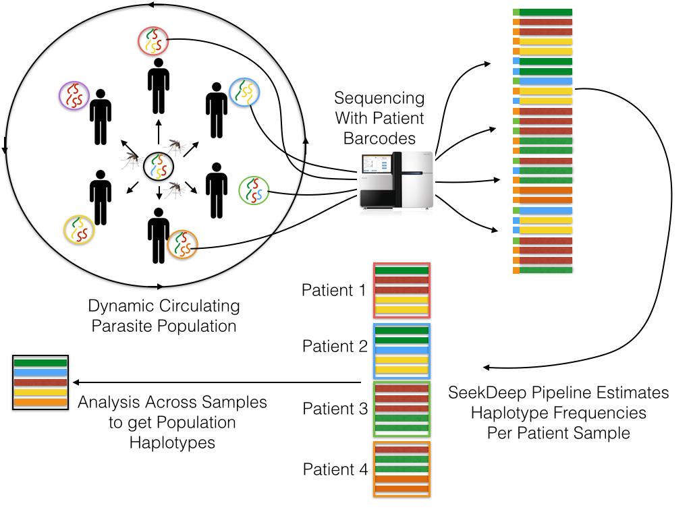
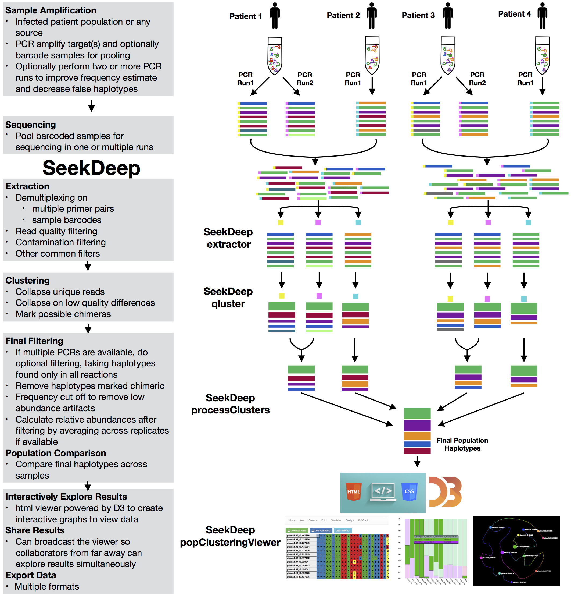

SeekDeep
SeekDeep
Targeted Amplicon Analysis
The SeekDeep pipeline is intended for use on targeted amplicon sequencing data for haplotype frequency estimation for multiple samples from a population. This is broken down into three steps.
1) extractor - Demultiplexing and read filtering
2) qluster - Clustering and haplotype prediction/frequency estimation per demultiplex data subset
3) processClusters - Possible multiple PCR replicate comparison and comparison of haplotypes across samples
4) popClusteringViewer - A html server to view final results, example here

extractor
Extractor can de-multiplex sequence data on sample MIDs and/or on primer pairs from 454, Ion Torrent, and Illumina. Can also apply several filtering parameters including read length and quality scores
qluster
qluster takes a single sample sequence file and clusters the reads based on common errors seen in sequencing and pcr.
processClusters
Does possible pcr replicate comparisons, performs some final data processing, and can do a simple population comparison across samples
Plasmodium Population
The SeekDeep pipeline grew out of the work done by Umass Med Bailey Lab and Collaborators on studying the Plasmodium parasite (Malaria) and is therefore shaped by this work

Multiplexed Patient Data
Full Tutorial Found Here
The SeekDeep pipeline was developed for work with targeted amplicon sequencing on patient/individual samples with dual PCR replicates and therefore is best used with this set up though it can also be used other set ups as well (multiple targets, single replicate data, etc.) Below is a schematic of simplified example of this normal set up.
Samples are taken from several patients/individuals and each sample has two PCR replicates done with different barcodes. Barcoded data is pooled and sequenced normally requiring several sequencing runs (which means the same barcodes can be used for different pools). Each sequencing run are demultiplexed by SeekDeep extractor to recover replicate organization.
Each demultiplex file is then clustered by SeekDeep qluster to estimate haplotypes diversity and frequency in each replicate.
Output data from each qluster run is then organized into output directory (this step is helped with use of SeekDeep makeSampleDirectories). This results directory is then analyzed by SeekDeep processClusters to do replicate comparison to keep haplotypes found only in both replicates and to do some final data filtering. Final data from the replicate comparison is then analyzed together to get a population analysis to get info on the haplotypes appearing in the whole population

Contact
Any questions or concerns should be directed to Nick Hathaway